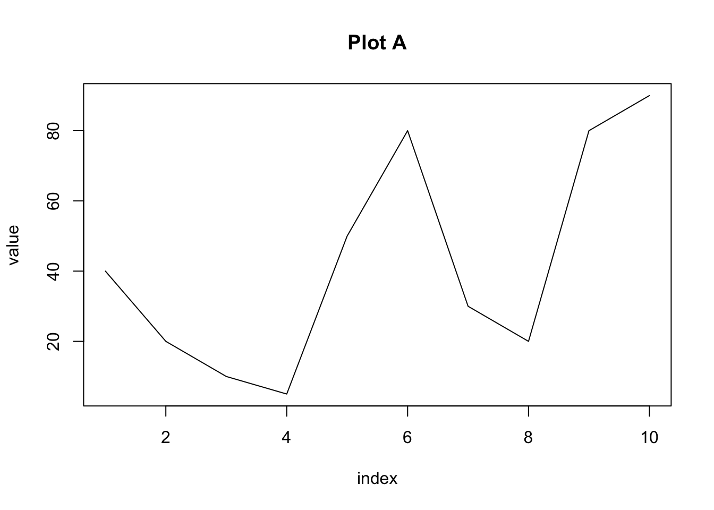
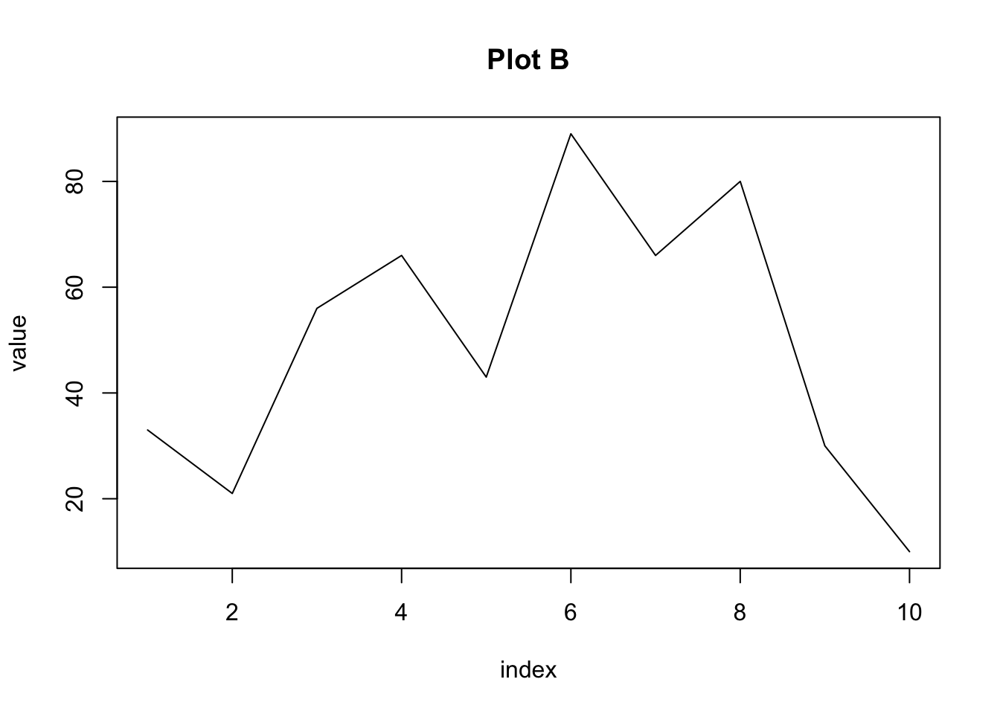

Programming in R Workshop
Load packages
Load purrr, tidyverse and dplyr packages.
Load the Eukaryotes dataset - only have to run this once to get the data
Code
eukaryotes <- read_tsv(
file = "ftp://ftp.ncbi.nlm.nih.gov/genomes/GENOME_REPORTS/eukaryotes.txt",
na = c("", "na", "-")
)
# Reformat dataset headers
names_new <- names(eukaryotes) |>
str_replace_all("[#%()]", "") |>
str_replace_all("[ /]", "_") |>
str_to_lower()
eukaryotes <- eukaryotes |>
set_names(names_new)
# Save tibble
write_tsv(eukaryotes, "eukaryotes.tsv")Load the saved dataset
Code
eukaryotes <- read_tsv(
"https://raw.githubusercontent.com/swuyts/purrr_tutorial/master/data/eukaryotes.tsv"
)Rows: 11508 Columns: 19
── Column specification ────────────────────────────────────────────────────────
Delimiter: "\t"
chr (10): organism_name, bioproject_accession, group, subgroup, assembly_ac...
dbl (7): taxid, bioproject_id, size_mb, gc, scaffolds, genes, proteins
date (2): release_date, modify_date
ℹ Use `spec()` to retrieve the full column specification for this data.
ℹ Specify the column types or set `show_col_types = FALSE` to quiet this message.How many different organisms are there in our dataset?
Code
eukaryotes |>
pull(organism_name) |>
n_distinct()[1] 6111Subset dataframe by selecting variables for the analysis:
Code
eukaryotes_subset <- eukaryotes |>
select(organism_name, group, subgroup)Using n_distinct to each variable of eukaryotes_subset
Nested Tibbles
Split the eukaryotes dataset according to groups defined in the group variable:
[1] "Other" "Protists" "Plants" "Fungi" "Animals" # A tibble: 5 × 2
# Groups: group [5]
group data
<chr> <list>
1 Other <tibble [51 × 18]>
2 Protists <tibble [888 × 18]>
3 Plants <tibble [1,304 × 18]>
4 Fungi <tibble [6,064 × 18]>
5 Animals <tibble [3,201 × 18]>Split the “eukaryotes_nested” into 5 smaller dataframes.
Code
eukaryotes_nested |> pull(data)[[1]]
# A tibble: 51 × 18
organism_name taxid bioproject_accession bioproject_id subgroup size_mb
<chr> <dbl> <chr> <dbl> <chr> <dbl>
1 Pyropia yezoensis 2788 PRJNA589917 589917 Other 108.
2 Thalassiosira pse… 296543 PRJNA191 191 Other 32.4
3 Guillardia theta … 905079 PRJNA53577 53577 Other 87.1
4 Cyanidioschyzon m… 280699 PRJNA10792 10792 Other 16.5
5 Galdieria sulphur… 130081 PRJNA13023 13023 Other 13.7
6 Phaeodactylum tri… 556484 PRJNA13152 13152 Other 27.5
7 Bigelowiella nata… 753081 PRJNA47111 47111 Other 91.4
8 Ectocarpus silicu… 2880 PRJEA42625 42625 Other 196.
9 Thalassiosira oce… 159749 PRJNA36595 36595 Other 92.2
10 Fragilariopsis cy… 635003 PRJNA32761 32761 Other 80.5
# ℹ 41 more rows
# ℹ 12 more variables: gc <dbl>, assembly_accession <chr>, replicons <chr>,
# wgs <chr>, scaffolds <dbl>, genes <dbl>, proteins <dbl>,
# release_date <date>, modify_date <date>, status <chr>, center <chr>,
# biosample_accession <chr>
[[2]]
# A tibble: 888 × 18
organism_name taxid bioproject_accession bioproject_id subgroup size_mb
<chr> <dbl> <chr> <dbl> <chr> <dbl>
1 Emiliania huxleyi… 280463 PRJNA77753 77753 Other P… 168.
2 Leishmania major … 347515 PRJNA10724 10724 Kinetop… 32.9
3 Trypanosoma bruce… 679716 PRJEA40697 40697 Kinetop… 22.1
4 Trypanosoma cruzi 5693 PRJNA11755 11755 Kinetop… 89.9
5 Entamoeba histoly… 294381 PRJNA142 142 Other P… 20.8
6 Giardia intestina… 5741 PRJNA561185 561185 Other P… 11.5
7 Eimeria tenella 5802 PRJEB4863 224694 Apicomp… 51.9
8 Cryptosporidium p… 353152 PRJNA144 144 Apicomp… 9.10
9 Toxoplasma gondii… 508771 PRJNA28893 28893 Apicomp… 65.7
10 Plasmodium berghei 5821 PRJEB11993 305111 Apicomp… 18.8
# ℹ 878 more rows
# ℹ 12 more variables: gc <dbl>, assembly_accession <chr>, replicons <chr>,
# wgs <chr>, scaffolds <dbl>, genes <dbl>, proteins <dbl>,
# release_date <date>, modify_date <date>, status <chr>, center <chr>,
# biosample_accession <chr>
[[3]]
# A tibble: 1,304 × 18
organism_name taxid bioproject_accession bioproject_id subgroup size_mb
<chr> <dbl> <chr> <dbl> <chr> <dbl>
1 Arabidopsis thali… 3702 PRJNA10719 10719 Land Pl… 120.
2 Glycine max 3847 PRJNA19861 19861 Land Pl… 979.
3 Medicago truncatu… 3880 PRJNA10791 10791 Land Pl… 413.
4 Solanum lycopersi… 4081 PRJNA119 119 Land Pl… 828.
5 Hordeum vulgare s… 112509 PRJEB34217 576847 Land Pl… 4341.
6 Oryza sativa Japo… 39947 PRJNA12269 12269 Land Pl… 374.
7 Triticum aestivum 4565 PRJNA392179 392179 Land Pl… 15419.
8 Zea mays 4577 PRJNA10769 10769 Land Pl… 2135.
9 Coffea arabica 13443 PRJNA506972 506972 Land Pl… 1094.
10 Lotus japonicus 34305 PRJDA28941 28941 Land Pl… 394.
# ℹ 1,294 more rows
# ℹ 12 more variables: gc <dbl>, assembly_accession <chr>, replicons <chr>,
# wgs <chr>, scaffolds <dbl>, genes <dbl>, proteins <dbl>,
# release_date <date>, modify_date <date>, status <chr>, center <chr>,
# biosample_accession <chr>
[[4]]
# A tibble: 6,064 × 18
organism_name taxid bioproject_accession bioproject_id subgroup size_mb
<chr> <dbl> <chr> <dbl> <chr> <dbl>
1 Pneumocystis cari… 1.41e6 PRJNA223511 223511 Ascomyc… 7.66
2 Schizosaccharomyc… 4.90e3 PRJNA13836 13836 Ascomyc… 12.6
3 Saccharomyces cer… 5.59e5 PRJNA43747 43747 Ascomyc… 12.2
4 Aspergillus nidul… 2.27e5 PRJNA130 130 Ascomyc… 30.3
5 Aspergillus fumig… 3.31e5 PRJNA131 131 Ascomyc… 29.4
6 Neurospora crassa… 3.67e5 PRJNA13841 13841 Ascomyc… 41.1
7 Phanerochaete chr… 5.31e3 PRJNA343563 343563 Basidio… 39.2
8 Candida albicans … 2.38e5 PRJNA10701 10701 Ascomyc… 14.3
9 Encephalitozoon c… 2.85e5 PRJNA13833 13833 Other F… 2.50
10 Aspergillus terre… 3.42e5 PRJNA15631 15631 Ascomyc… 29.4
# ℹ 6,054 more rows
# ℹ 12 more variables: gc <dbl>, assembly_accession <chr>, replicons <chr>,
# wgs <chr>, scaffolds <dbl>, genes <dbl>, proteins <dbl>,
# release_date <date>, modify_date <date>, status <chr>, center <chr>,
# biosample_accession <chr>
[[5]]
# A tibble: 3,201 × 18
organism_name taxid bioproject_accession bioproject_id subgroup size_mb
<chr> <dbl> <chr> <dbl> <chr> <dbl>
1 Caenorhabditis br… 6238 PRJNA10731 10731 Roundwo… 108.
2 Caenorhabditis el… 6239 PRJNA13758 13758 Roundwo… 100.
3 Brugia malayi 6279 PRJNA10729 10729 Roundwo… 93.7
4 Aedes aegypti 7159 PRJNA392114 392114 Insects 1279.
5 Aedes albopictus 7160 PRJNA552090 552090 Insects 2538.
6 Anopheles gambiae… 180454 PRJNA1438 1438 Insects 265.
7 Drosophila melano… 7227 PRJNA13669 13669 Insects 144.
8 Apis mellifera 7460 PRJNA477511 477511 Insects 225.
9 Ciona intestinalis 7719 PRJDA65419 65419 Other A… 115.
10 Danio rerio 7955 PRJNA11776 11776 Fishes 1679.
# ℹ 3,191 more rows
# ℹ 12 more variables: gc <dbl>, assembly_accession <chr>, replicons <chr>,
# wgs <chr>, scaffolds <dbl>, genes <dbl>, proteins <dbl>,
# release_date <date>, modify_date <date>, status <chr>, center <chr>,
# biosample_accession <chr>Combine nested tibbles and map
Count number of rows for each sub data frames
Code
map(eukaryotes_nested$data, nrow)[[1]]
[1] 51
[[2]]
[1] 888
[[3]]
[1] 1304
[[4]]
[1] 6064
[[5]]
[1] 3201Create a new column using mutate()
# A tibble: 5 × 3
# Groups: group [5]
group data n_row
<chr> <list> <int>
1 Other <tibble [51 × 18]> 51
2 Protists <tibble [888 × 18]> 888
3 Plants <tibble [1,304 × 18]> 1304
4 Fungi <tibble [6,064 × 18]> 6064
5 Animals <tibble [3,201 × 18]> 3201How many different organisms are there per group ?
There are two different ways:
Code
# Define a custom function
n_distinct_organisms <- function(data) {
data |>
pull(organism_name) |>
n_distinct()
}
# Define a custom function as a formula
# .x is the notation for the object that is given as an input to this function.
n_distinct_organisms2 <- ~ .x |>
pull(organism_name) |>
n_distinct()Apply the function to our nested data:
Code
# A tibble: 5 × 4
# Groups: group [5]
group data n_organisms n_organisms2
<chr> <list> <dbl> <dbl>
1 Other <tibble [51 × 18]> 35 35
2 Protists <tibble [888 × 18]> 490 490
3 Plants <tibble [1,304 × 18]> 673 673
4 Fungi <tibble [6,064 × 18]> 2926 2926
5 Animals <tibble [3,201 × 18]> 1987 1987We can define the functions on the fly:
Code
eukaryotes_nested |>
mutate(
n_organisms = map_dbl(data, ~ .x |> pull(organism_name) |> n_distinct()),
n_centers = map_dbl(data, ~ .x |> pull(center) |> n_distinct()),
n_subgroups = map_dbl(data, ~ .x |> pull(subgroup) |> n_distinct())
)# A tibble: 5 × 5
# Groups: group [5]
group data n_organisms n_centers n_subgroups
<chr> <list> <dbl> <dbl> <dbl>
1 Other <tibble [51 × 18]> 35 34 1
2 Protists <tibble [888 × 18]> 490 265 3
3 Plants <tibble [1,304 × 18]> 673 492 3
4 Fungi <tibble [6,064 × 18]> 2926 950 3
5 Animals <tibble [3,201 × 18]> 1987 769 9pmap and walk2 functions
We will explain by the following example for pmap:
Code
df <- data.frame(
x = c(
"ATTTTACTGGGAGGGAA",
"TATTTTTTAAAGGGCCC",
"GCGCGCCCCAAATTATAGGC",
"TGCCACATTTTATCCGCGCA"
),
pattern = c("A", "T", "G", "C"),
replacement = c("a", "t", "g", "c"),
stringsAsFactors = FALSE
)
pmap(df, gsub)[[1]]
[1] "aTTTTaCTGGGaGGGaa"
[[2]]
[1] "tAttttttAAAGGGCCC"
[[3]]
[1] "gCgCgCCCCAAATTATAggC"
[[4]]
[1] "TGccAcATTTTATccGcGcA"Example for walk2:
Code
df1 <- data.frame(
index = c(1, 2, 3, 4, 5, 6, 7, 8, 9, 10, 1, 2, 3, 4, 5, 6, 7, 8, 9, 10),
value = c(
40,
20,
10,
5,
50,
80,
30,
20,
80,
90,
33,
21,
56,
66,
43,
89,
66,
80,
30,
10
),
category = c(
"A",
"A",
"A",
"A",
"A",
"A",
"A",
"A",
"A",
"A",
"B",
"B",
"B",
"B",
"B",
"B",
"B",
"B",
"B",
"B"
)
)
df1 %>%
split(.$category) %>%
.[order(names(.))] %>%
walk2(
paste('Plot', names(.)),
~ plot(value ~ index, data = .x, type = "l", main = .y)
)
